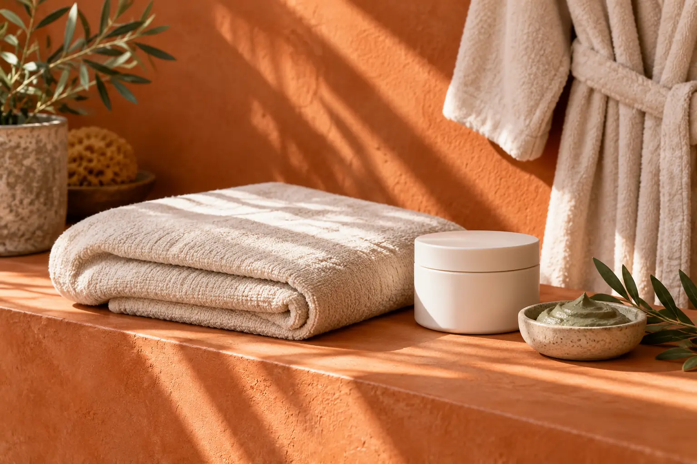

Kūno įvyniojimai: priemonė, ritualas ir pažadų ribos
Autorius: Madbeauty redakcija · Numatyta 2026 m. gruodžio 14 d. 16:00 (Lietuvos laiku)
Kaip atskirti įvyniojimo priemonę nuo papildomų ritualo darbų, palyginti purvo ir dumblių įvyniojimų aprašus ir vertinti svorio ar „detox“ pažadus.

Rinkdamiesi kūno įvyniojimą, atskirkite du dalykus: kokia priemonė nurodyta pavadinime ir kokie veiksmai įtraukti į vizitą. „Purvo“ ar „dumblių“ etiketė viena pati nepasako tikslios produkto sudėties, procedūros eigos ar rezultato. O šildymas, poilsio etapas ar masažas, jei jie siūlomi, yra papildomos paslaugos dalys, kurias verta palyginti atskirai.
Priemonė ir ritualo darbai – skirtingi palyginimo klausimai
Pavadinimas „purvo įvyniojimas“ arba „dumblių įvyniojimas“ nurodo, kokią priemonės rūšį siūlymas deklaruoja. Vien iš jo negalima nustatyti konkretaus produkto, sudedamųjų dalių ar poveikio. Tikslaus produkto ir paslaugos apimties reikėtų ieškoti pačiame pasiūlyme. Lietuvos kūno įvyniojimų kategorijos pavyzdyje matyti skirtingos priemonių, šilumos ir paketų etiketės. Tai parodo, kaip gali būti aprašoma pasiūla, bet nenustato vienodo procedūros protokolo ar rezultato.
- Priemonė: įvardytas tipas ir tikslus naudojamas produktas.
- Apimtis: kūno zona ir konkretūs įtraukti veiksmai.
- Papildomi etapai: ar įeina šiluma, poilsio laikas, nuplovimas ar masažas, ir kiek kiekvienas jų trunka.
- Sąlygos: visa vizito trukmė, kaina ir kiti mokesčiai, jei jie nurodyti, bei tai, ką paslaugos aprašas žada išmatuoti ar pakeisti.
Purvo ar dumblių įvyniojimas?
Šiuos pavadinimus prasminga lyginti pagal deklaruojamą priemonės rūšį, o ne laikyti vienas kito įrodytu pakaitalu. Jei svarbu būtent priemonė, ieškokite tikslaus produkto aprašo. Jei svarbiau pati patirtis, tikrinkite įtrauktus veiksmus, jų trukmę ir sąlygas. Vien pavadinimas neleidžia nuspręsti, kuris variantas geresnis ar tinkamesnis konkrečiam žmogui.
Pavyzdžiui, įsivaizduokime du trumpus aprašus: „dumblių įvyniojimas“ ir „purvo įvyniojimas su šiluminiu etapu“. Tai iliustracinis palyginimas, ne tikrų teikėjų pasiūlymai. Pirmame aiškiai įvardyta priemonės rūšis; antrame dar nurodytas papildomas etapas. Tačiau aprašai neatsako, koks produktas naudojamas, kiek trunka etapas ar koks rezultatas pasiekiamas. Šiuos dalykus reikia vertinti atskirai.
Kaip vertinti „detox“ ar svorio mažinimo pažadus
Reklaminis žodis pats savaime nepaaiškina, ką paslauga turėtų pakeisti ir kaip tas pokytis nustatomas. Jei aprašyme žadamas svorio ar kūno kontūro pokytis, atskirkite tokį teiginį nuo pačios įvyniojimo priemonės ir paprašykite konkretaus paaiškinimo. JAV FDA medžiaga apie neinvazines kūno kontūro technologijas aptaria įrenginiais atliekamas procedūras, o ne įvyniojimus; ji neįrodo įvyniojimų poveikio. Šio šaltinio teiginių negalima perkelti kitam metodui vien dėl panašaus reklaminio pažado.
Palyginimo ruošinys prieš renkantis
Palyginkite pasiūlymus pagal tuos pačius laukus: deklaruojamą priemonę ir tikslų produktą; kūno zoną; įtrauktus veiksmus; kiekvieno papildomo etapo trukmę; viso vizito kainą ir sąlygas. Jei viename apraše šių duomenų nėra, pažymėkite juos kaip nežinomus, o ne numanykite pagal pavadinimą. Taip matysite, ar lyginate priemones, ar skirtingos apimties ritualus.
Jei pasiūlymas pristatomas kaip gydymas ar kita sveikatos paslauga, patikrinkite, kokios paslaugos iš tikrųjų siūlomos. NVSC paaiškina, kad grožio ir asmens sveikatos priežiūros paslaugos nėra tas pats. Jei paslauga yra sveikatos priežiūros paslauga, VASPVT nurodo tikrinti įstaigos ir specialisto licencijas bei jų apimtį. Tai nėra reikalavimas kiekvieną kosmetinį įvyniojimą automatiškai laikyti sveikatos paslauga. NVSC paaiškinimas apie paslaugų ribas
Procedūrų aprašai kataloge: Kūno įvyniojimas, Purvo įvyniojimas, Dumblių įvyniojimas. Miestą ir realaus teikėjo pasiūlymą pasirinkite kataloge, kai tokia pasiūla pateikta.
Susiję gidai
Šaltiniai
- FDA · neinvazinės kūno kontūro procedūros · www.fda.gov
- Treatwell · kūno įvyniojimų LT pasiūlos pavyzdžiai · www.treatwell.lt
- NVSC · grožio ir sveikatos paslaugų riba · nvsc.lrv.lt
- VASPVT · sveikatos paslaugų teisėtumo patikra · vaspvt.lrv.lt